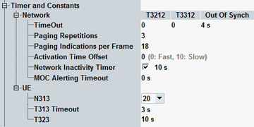

The parameters in this section configure timers and counters.
This section is not relevant for reduced signaling.

Configures the network-related timers and constants.
Timer T3212 controls the initiation of a periodic location area update by the UE. It is set in multiples of 6 minutes. If 0 is set, no periodic location area update is required.
Timer T3312 controls the initiation of a periodic routing area update by the UE. It is set in multiples of 2 seconds. If 0 is set, no periodic routing area update is required.
Option R&S CMW-KS410 is required.
Remote command:The "OutOfSynch" timer specifies the time after which the instrument, having waited for a signal from the connected UE, releases the connection and returns to state registered.
Option R&S CMW-KS410 is required.
Remote command:This counter limits the number of paging procedures to be performed if no answer is received from the UE. Paging is repeated until the specified number of paging repetitions is reached. Then the call setup is aborted.
Option R&S CMW-KS410 is required.
Remote command:Number Np of paging indicators that the R&S CMW transmits in each PICH frame. According to 3GPP TS 25.211, this number equals 18, 36, 72, or 144. The parameter Np occurs in 3GPP TS 34.121, e.g. in section "Demodulation of Paging Channel (PCH)".
Option R&S CMW-KS410 is required.
Remote command:Delay used by the RRC for calculation of the activation time in peer messages, e.g. for channel changes within the band.
A low value results in fast signaling, a high value in slow signaling. If your UE does not support fast signaling, increase the value.
Remote command:Time the R&S CMW waits since last u-plane activity before it commands the UE to leave CELL_DCH RRC state. The PDP context stays active.
For the description of remaining inactivity parameters, refer to "Inactivity Settings".
Option R&S CMW-KS410 is required.
Specifies the time period of R&S CMW alerting state. When the timer expires, the R&S CMW changes to "Call Established" state. If the value is 0, the alerting state is skipped.
Remote command:Configures the UE-related timers and constants.
Option R&S CMW-KS410 is required.
Maximum number of successive "out of sync" indications received from layer 1 before the UE considers a radio link failure condition and a connection release; see 3GPP TS 25.331. A specific value for N313 is required for some conformance tests; e.g. 3GPP TS 34.121, section 5.4.4.
Remote command:Maximum time after which the connected UE, having waited for a signal from the instrument, initiates the clearing of the connection by sending a disconnect request.
Remote command:Time the UE waits upon inactivity before it terminates the PS data session. PDP context remains active, the IP address is kept.
For remote control and the description of remaining inactivity parameters, refer to "Inactivity Settings".
Option R&S CMW-KS404 is required.